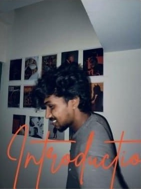

Videography
Promotional and narrative footage shot on a Sony A7 III and Fujifilm X-T5 — framing, staging and coverage planned before the shoot.
Filmmaker / Videographer / Screenwriter
I tell stories with light —
from Chennai, one frame at a time.

Scene 01 · Take 0101 About
I'm Anish — a Visual Communication graduate from Chennai who loves the art and craft of filmmaking. I watch films from many industries, and I'm drawn most to direction and screenwriting.
My proficiency lies in writing, visual storytelling, communication and blocking / staging scenes. I like writing dialogue in Tanglish because it sounds the way people really speak. I bring a blend of commerce and art to every set — creative, rational, and always ready to learn something new.
02 Featured Work
Psychological · Tamil · 8 min
“The mind creates comforting illusions when reality becomes too painful to endure.”
Sibi lives a monotonous, emotionally distant life, avoiding confined spaces at all costs because of severe claustrophobia. When circumstances force him into the closed space he fears most, he meets a mysterious girl — a presence that brings an unexpected calm. As reality and perception blur, the encounter transforms his inner world.
We developed the concept around our theme and locked the storyline through group discussion. Then came location scouting — especially for the closed-space scenes — choosing places that would carry the mood of the story before a single frame was shot.
We shot in an apartment, on a beach and along roadsides. Not every idea survived: a planned train sequence wasn't practical, so the scenes were reshaped around the locations we had — keeping the heart of the story intact with the resources available.
The rough cut ran about 25 minutes. Across nearly five versions it was tightened to 8 minutes without losing emotional impact. Cutting, sequencing and sound design were done in Premiere Pro; DaVinci Resolve was used to grade reality and the character's inner state differently.
“This project helped me understand how to tell a story through visuals instead of depending only on dialogue — through expressions, silence and simple moments. The lift scene was the hardest: showing fear and tension in a small space. The beach scenes gave a strong emotional contrast. It motivated me to become a better director.”
— From the screenplay
The final pages of VAST: no speech in the lift, only breath and silence — then the release at the beach.
EXT. OFFICE STAIRS – DAY
Alex climbs down. Stops. Looks at the lift. Pressure builds. He walks toward it.
INT. LIFT – CONTINUOUS
Door closes. Silence. Alex breathes slowly.
BLACK SCREEN
EXT. BEACH
Alex walks with the girl, laughter in his eyes, moving lightly as if the weight he carried has finally disappeared.
FADE OUT
THE END
Working stills from the set — click any frame to enlarge.
03 Craft & Toolkit
Promotional and narrative footage shot on a Sony A7 III and Fujifilm X-T5 — framing, staging and coverage planned before the shoot.
Scripts, brand stories and promo copy. Natural, spoken-word dialogue — especially in Tanglish — with a bias for visual, show-don't-tell scenes.
Guiding actors, blocking scenes and shaping mood — from the 8-minute psychological short VAST to assisting on an award-winning college film.
Rough-cut to final in Premiere Pro, sound design for mood, and grading in DaVinci Resolve to separate reality from inner state.
Managed online campaigns and brand storytelling for Srij Fashion, strengthening its digital presence through video-first content.
Location scouting, group story development and adapting plans on the fly when practical limits change the shoot.
04 Journey
Carpe Diem 2K23 · Natesan Institute of Cooperative Management
Recognised with a Certificate of Appreciation as a runner-up in the Short Film event, held on 16 October 2023.
Magicalens Entertainment Pvt Ltd · Chennai
One month (1 – 30 June 2024) in film production and post-production. The Creative Head commended my skills, dedication, professionalism and enthusiasm.
Inter-college short film competition
Worked as Assistant Director on the short film, which earned a runner-up award in the inter-college competition.
Srij Fashion · Chennai
One month (1 – 30 May 2025) creating promotional video scripts and brand stories, shooting video and running online campaigns that grew the brand's digital presence.
B.Sc. Visual Communication final project · SRM IST
Wrote, directed and edited an 8-minute Tamil psychological short, shot over two days and submitted as the degree's practical project.
B.Sc. Visual Communication
SRM Institute of Science and Technology, Kattankulathur
Faculty of Science & Humanities
National Vidhyalaiya CBSE
Kumbakonam
05 Recognition & Certificates
06 Contact
Looking for an enthusiastic filmmaker for your next short, brand film or internship? I'm flexible across roles, quick to learn, and happy to start with a conversation.